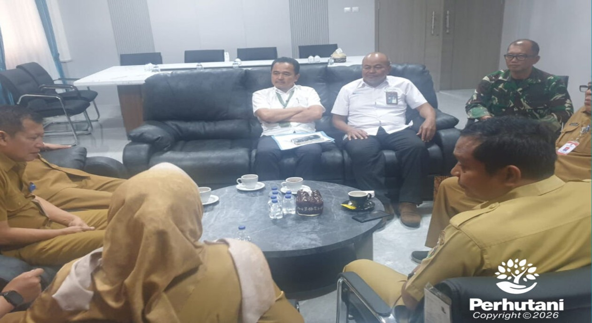

PURWAKARTA, PERHUTANI (27/01/2026) | Perhutani Kesatuan Pemangkuan Hutan (KPH) Purwakarta menyatakan dukungan terhadap Program Strategis Nasional (PSN) pembangunan Koperasi Desa Merah Putih (KDMP) yang digagas Pemerintah Kabupaten (Pemkab) Purwakarta. Dukungan tersebut dirumuskan melalui rapat koordinasi penyiapan lahan yang dipimpin Oleh Sekretaris Daerah (Sekda) Kabupaten Purwakarta dan Komandan Komando Distrik Militer (Dandim) 0619 Purwakarta bertempat di Kantor Pemerintah Daerah (Pemda) Purwakarta & Kantor Kodim 0619 Purwakarta , Senin (26/01).
Rapat dihadiri oleh Sekda kab Purwakarta, Dandim Kab Purwakarta, Administratur KPH Purwakarta, Asisten Daerah/ Asisten Sekretaris Daerah (Asda) II Kab Purwakarta, Kepala Dinas (Kadis) Koperasi Kabupaten Purwakarta, Kepala Bidang (Kabid) Koperasi Kabupaten Purwakarta, Perwira Seksi Teritorial (Pasiter) kodim Kabupaten Purwakarta. Kepala Bagian (Kabag) Ekonomi Kabupaten Purwakarta Agenda rapat difokuskan pada kesiapan lahan dan pemenuhan aspek legalitas dalam rencana pembangunan sarana dan prasaran KDMP.
Administratur Perhutani KPH Purwakarta Cecep Suryaman di Dampingi Wakil Administratur Mulyana Kurniawan menyampaikan apresiasi kepada Pemerintah Kabupaten (Pemkab) Purwakarta atas langkah koordinatif dalam penyiapan program. “Perhutani siap mendukung KDMP sebagai upaya pemerintah dalam penguatan ekonomi masyarakat desa hutan. Namun setiap pemanfaatan kawasan hutan wajib mengacu pada regulasi yang berlaku guna menjaga kelestarian dan tata kelola sumber daya hutan,” ujarnya.
Perhutani akan menindaklanjuti koordinasi teknis dengan pemerintah desa dan jajaran Bagian Kesatuan Pemangkuan Hutan (BKPH) untuk memastikan status lahan serta proses perizinan pemanfaatan kawasan hutan sesuai mekanisme yang berlaku. Sekda Kabupaten Purwakarta Ir. Sri Jaya Midan menjelaskan bahwa KDMP merupakan bentuk ekonomi berbasis kebersamaan yang membutuhkan dukungan lintas sektor. “Keberhasilan KDMP ditentukan oleh sinergi Pemerintah Daerah, TNI, Polri, instansi terkait, dan masyarakat. Pelaksanaan program tetap mengedepankan aspek hukum, tata ruang, dan kelestarian lingkungan,” terangnya.
Komandan Kodim 0619 Purwakarta Letnal Kolonel (Letkol) Infanfantri Ardha menambahkan bahwa KDMP merupakan Program Strategis Nasional sebagaimana diatur dalam Instruksi Presiden Nomor 17 Tahun 2025. Untuk mendukung program tersebut, setiap desa membutuhkan lahan seluas 1.000 meter persegi untuk pembangunan kantor dan sarana usaha KDMP melalui pemanfaatan aset pemerintah desa, pemerintah daerah, Badan Usaha Milik Negara (BUMN), maupun sumber lain yang sah untuk mendukung informasi resmi mengenai kolaborasi Perhutani dan Pemerintah Kab Purwakarta dalam percepatan pembangunan KDMP sebagai bagian dari agenda pembangunan ekonomi desa yang inklusif dan berkelanjutan.
Editor: WK
Copyright © 2026 Warta Nusantara Barat